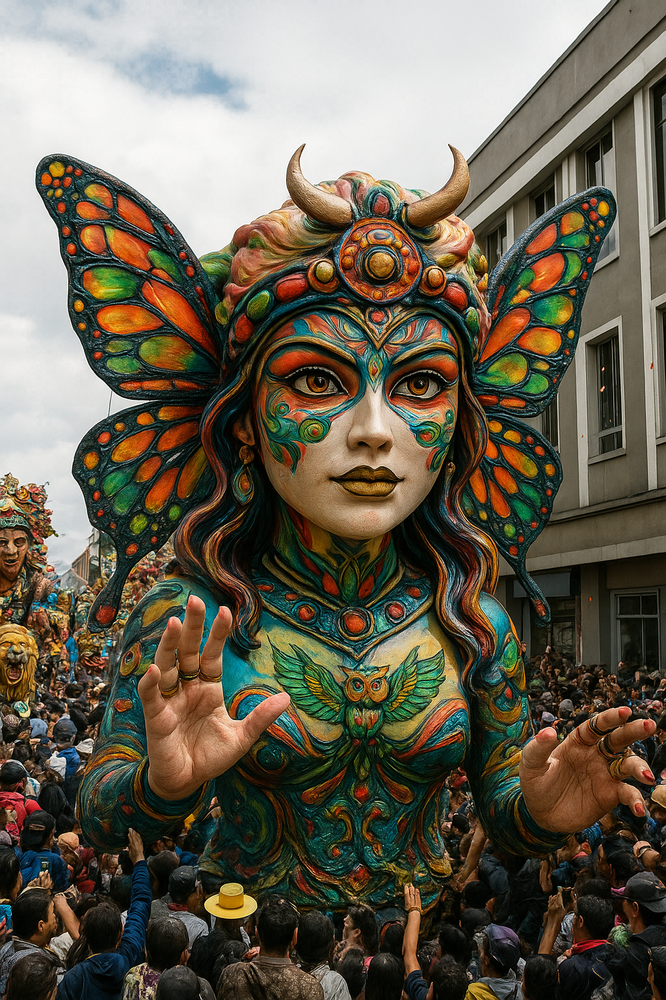
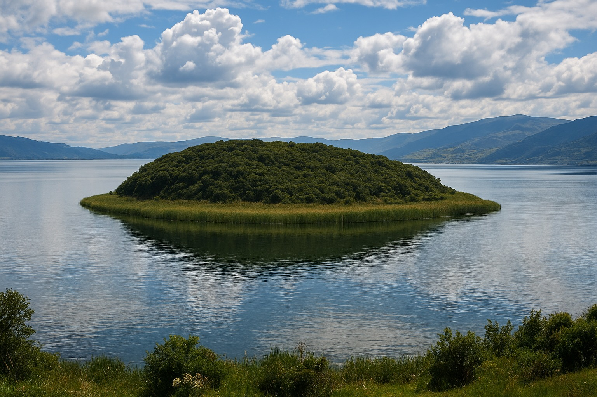
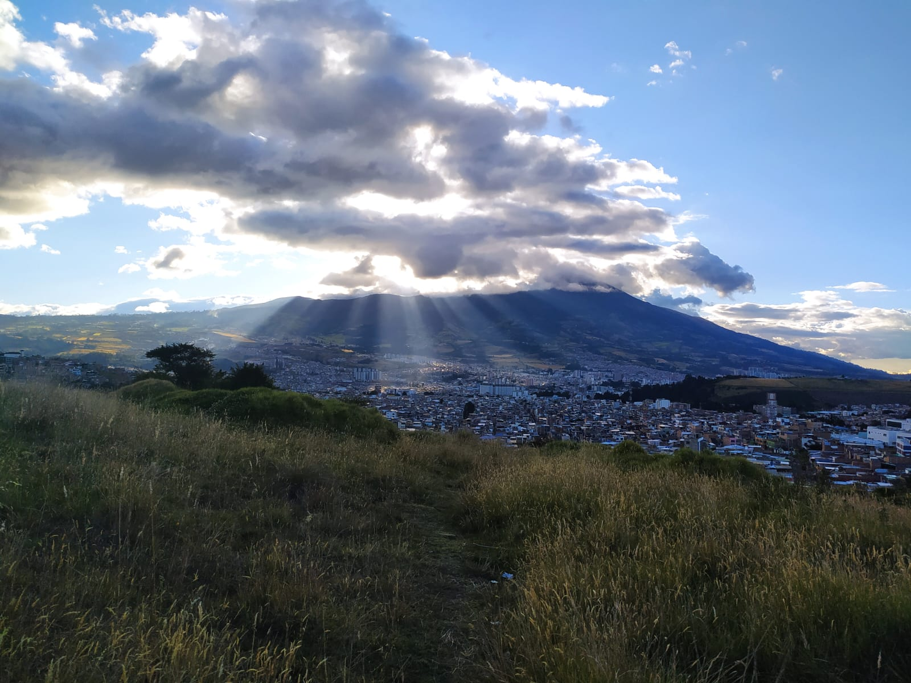
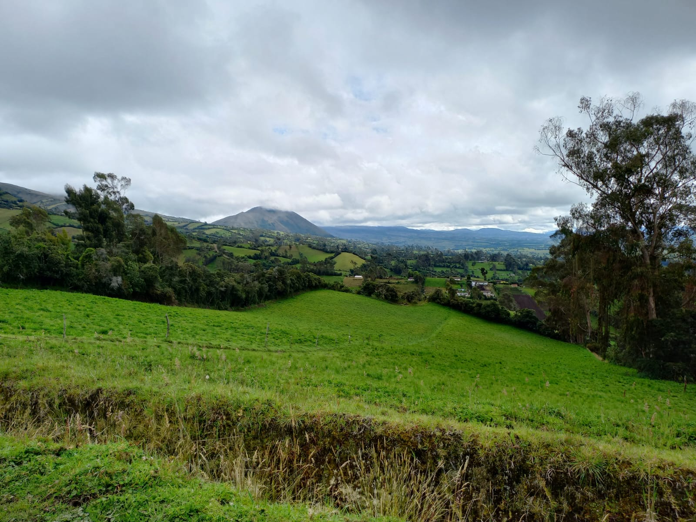
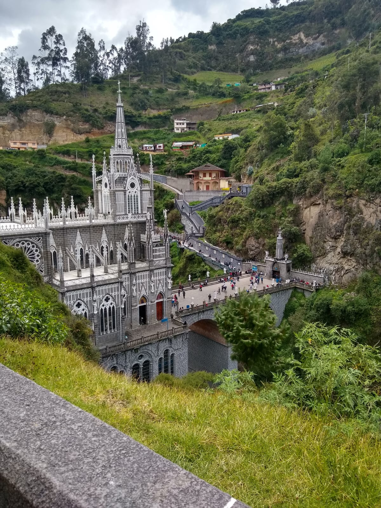
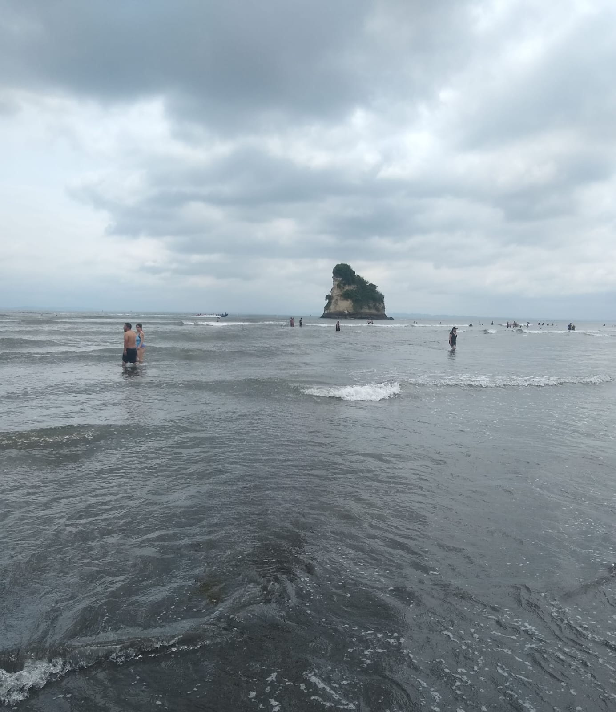

Bienvenido a CODETURIST
CODETURIST es una empresa nariñense dedicada al fortalecimiento del turismo sostenible y responsable en el departamento de Nariño, Colombia. Nuestro propósito es brindar experiencias auténticas que promuevan la conservación ambiental, la valoración de la identidad regional y el desarrollo comunitario.
Trabajamos directamente con comunidades locales para ofrecer un turismo que respeta las tradiciones, protege los ecosistemas y genera beneficios económicos justos para los habitantes de esta maravillosa región.
¿Por qué elegir CODETURIST?
- Experiencias auténticas y responsables
- Guías locales certificados
- Impacto positivo en comunidades
- Compromiso con la conservación ambiental
- Itinerarios personalizados
- Asistencia 24/7 durante tu viaje
Nariño Mágico
Nariño, tierra de contrastes y maravillas naturales, es un departamento que cautiva con su diversidad de paisajes, desde las imponentes alturas del Volcán Galeras hasta las cálidas playas del Pacífico.
Conocido como "Tierra de volcanes y lagunas", Nariño alberga ecosistemas únicos que van desde el páramo andino hasta bosques húmedos tropicales, siendo hogar de una rica biodiversidad y culturas ancestrales que mantienen vivas sus tradiciones.
La magia de Nariño se manifiesta en sus coloridos carnavales, su exquisita gastronomía y la calidez de su gente, que recibe a los visitantes con los brazos abiertos, invitándolos a descubrir los secretos mejor guardados del sur de Colombia.
Lo que hace mágico a Nariño
- Volcán Galeras: Guardián imponente de Pasto
- Laguna de la Cocha: Espejo de agua sagrado
- Carnaval de Negros y Blancos: Patrimonio de la Humanidad
- Reserva Natural La Planada: Refugio de biodiversidad
- San Juan de Pasto: Ciudad sorpresa de Colombia
- Gastronomía única: El cuy, el hornado y los amasijos
- Artesanías en barniz de Pasto: Técnica ancestral
- Pueblos patrimonio: Ipiales, Tumaco y Sandoná
Ruta de la Circunvalar del Volcán Galeras
Un Viaje Inolvidable Alrededor del Volcán
La Ruta de la Circunvalar es uno de los recorridos más espectaculares de Nariño, que rodea el imponente Volcán Galeras. Esta ruta ofrece:
- Vistas panorámicas: Miradores naturales con vistas impresionantes del volcán y la ciudad de Pasto
- Paisajes diversos: Desde páramos andinos hasta bosques nublados y valles fértiles
- Cultura viva: Comunidades indígenas que mantienen tradiciones ancestrales
- Gastronomía local: Degusta platos típicos en restaurantes con vista al volcán
- Avistamiento de fauna: Observa cóndores, venados y especies únicas de la región
Nuestros tours incluyen guías especializados, transporte seguro y todas las paradas en los puntos más emblemáticos de esta ruta.

Galería de Nariño






Nuestros Servicios
Ecoturismo
Experiencias en contacto con la naturaleza que promueven la conservación ambiental y el bienestar de las comunidades locales.
Turismo de Aventura
Senderismo, avistamiento de aves, montañismo y otras actividades en los paisajes únicos de Nariño.
Turismo Cultural
Recorridos que exploran la rica herencia cultural, histórica y artística del departamento.
Turismo para Extranjeros
Atención personalizada en varios idiomas para visitantes internacionales.
Nuestro Impacto
Visitantes Atendidos
Comunidades Beneficiadas
Guías Locales Capacitados
Satisfacción del Cliente
Testimonios de Viajeros

María González
Bogotá, Colombia

Carlos Rodríguez
Medellín, Colombia

Ana Martínez
Cali, Colombia